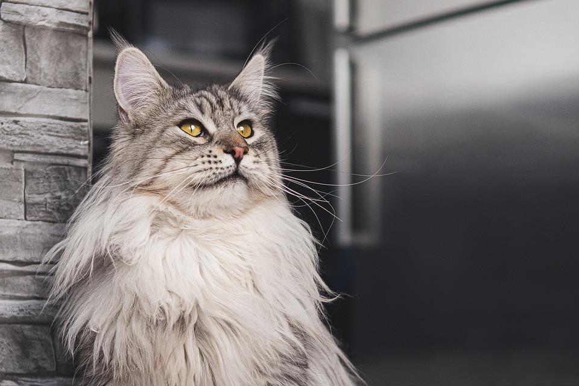
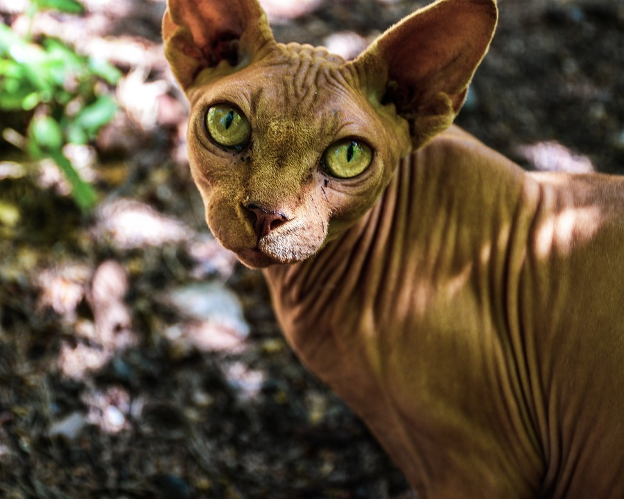
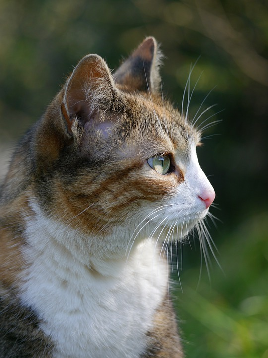

CATS is a resource all about cats. Cats are thought to be one of the most important animals in human history. Humanity perhaps would not be quite the same without cats.
Do you know your cat differences?

The main coon is know for its thick fur. It is also very energetic and playful.

The Sphynx is known for its lack of fur. It is perhaps one of the most active and dog-like cat breeds.

This cat breed originates from Thailand, formerly known as Siam. They are highly intelligent and also known to suffer separation anxiety.

Tabby cats can have lots of different fur designs. Tabby cats are also very playful.
What greater gift than the love of a cat.
Learn more!
Sign up with CATS to learn more information and get daily email trivia on cats.